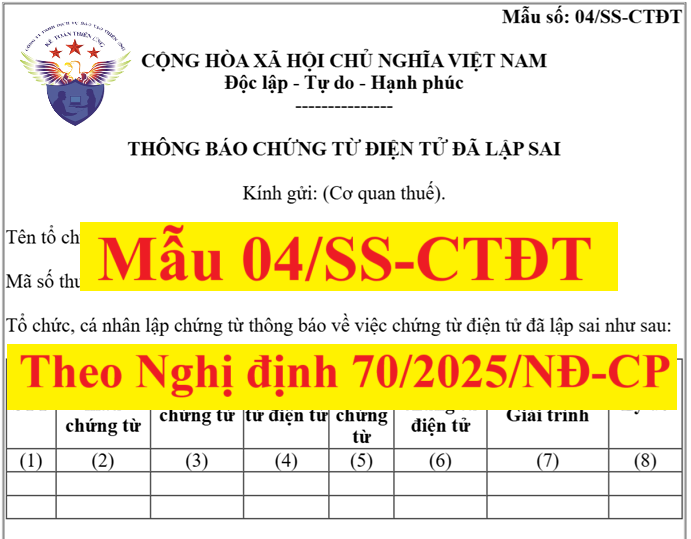

Mẫu 04/SS-CTĐT theo Nghị định 70/2025/NĐ-CP là mẫu Thông báo chứng từ điện tử đã lập sai
Theo khoản 22, điều 1 của Nghị định 70/2025/NĐ-CP sửa đổi Nghị định 123/2020/NĐ-CP quy định về hóa đơn, chứng từ thì:
Xử lý chứng từ điện tử đã lập thì:
Trường hợp chứng từ điện tử đã lập sai thì tổ chức khấu trừ thuế thực hiện xử lý chứng từ điện tử đã lập theo nguyên tắc tương tự xử lý hóa đơn điện tử đã lập quy định tại Điều 19 Nghị định này. Thông báo chứng từ đã lập sai theo Mẫu số 04/SS-CTĐT Phụ lục IA ban hành kèm theo Nghị định này.
Trong đó: Điều 19 Nghị định 123/2020/NĐ-CP hướng dẫn về cách Xử lý hóa đơn có sai sót (đã được sửa đổi bởi Khoản 13 Điều 1 Nghị định 70/2025/NĐ-CP có hiệu lực từ ngày 01/06/2025)
Chi tiết các bạn xem tại đây: Cách xử lý hóa đơn điện tử viết sai
Trong đó: Điều 19 Nghị định 123/2020/NĐ-CP hướng dẫn về cách Xử lý hóa đơn có sai sót (đã được sửa đổi bởi Khoản 13 Điều 1 Nghị định 70/2025/NĐ-CP có hiệu lực từ ngày 01/06/2025)
Chi tiết các bạn xem tại đây: Cách xử lý hóa đơn điện tử viết sai
Mẫu 04/SS-CTĐT theo Nghị định 70/2025/NĐ-CP như sau:
|
Mẫu số: 04/SS-CTĐT
CỘNG HÒA XÃ HỘI CHỦ NGHĨA VIỆT NAM Độc lập - Tự do - Hạnh phúc ---------------
THÔNG BÁO CHỨNG TỪ ĐIỆN TỬ ĐÃ LẬP SAI
Kính gửi: (Cơ quan thuế).
Tên tổ chức, cá nhân lập chứng từ: .................................................Mã số thuế: ...................................................................................... Tổ chức, cá nhân lập chứng từ thông báo về việc chứng từ điện tử đã lập sai như sau:
|
--------------------------------------------
Các bạn muốn tải (download) Mẫu 04/SS-CTĐT theo Nghị định 70/2025/NĐ-CP trên đây về để tham khảo và sử dụng thì có thể gửi mail về địa chỉ mail: ketoandieutam@gmail.com => Kế Toán Diệu Tâm sẽ gửi lại Mẫu 04/SS-CTĐT theo Nghị định 70/2025/NĐ-CP này cho các bạn
--------------------------------------------
Theo Quyết định số 1913/QĐ-BTC ngày 30/5/2025 của Bộ Tài chính về việc công bố thủ tục hành chính mới ban hành, được sửa đổi, bổ sung, bị bãi bỏ trong lĩnh vực quản lý Thuế, Hải quan thuộc phạm vi chức năng quản lý của Bộ Tài chính
Trong đó có Thủ tục hành chính mới đó là: Xử lý chứng từ điện tử đã lập sai
Theo đó thì:
Đối với trường hợp chứng từ điện tử đã lập sai thì tổ chức, cá nhân khấu trừ thuế thực hiện xử lý chứng từ điện tử theo trình tự như sau:
Bước 1: Trường hợp chứng từ điện tử đã lập đã gửi cơ quan thuế bị sai thì xử lý như sau:
Trường hợp có sai về tên, địa chỉ của tổ chức, cá nhân bị khấu trừ nhưng không sai mã số thuế, số định danh cá nhân, giấy tờ tùy thân hoặc số hộ chiếu và các nội dung khác không sai: Tổ chức, cá nhân trả thu nhập thông báo cho người bị khấu trừ thuế về việc chứng từ khấu trừ thuế bị sai và không phải lập lại chứng từ mới. Tổ chức trả thu nhập thực hiện thông báo với cơ quan thuế về chứng từ điện tử đã lập sai theo Mẫu số 04/SS-CTĐT Phụ lục IA ban hành kèm theo Nghị định số 70/2025/NĐ-CP ngày 20/3/2025 của Chính phủ.
Bước 2: Hệ thống thông tin giải quyết thủ tục hành chính của ngành thuế tự động tiếp nhận thông báo về việc tiếp nhận Mẫu 04/SS-CTĐT Phụ lục IB ban hành kèm theo Nghị định số 70/2025/NĐ-CP, qua Hệ thống thông tin giải quyết thủ tục hành chính của ngành thuế hoặc qua tổ chức cung cấp dịch vụ hóa đơn điện tử.

Bước 3: Cơ quan Thuế tiếp nhận dữ liệu điện tử.
- Cách thức thực hiện: Bằng phương thức điện tử qua Hệ thống thông tin giải quyết thủ tục hành chính của ngành thuế hoặc qua tổ chức cung cấp dịch vụ hoá đơn điện tử.
- Thành phần hồ sơ, gồm: Mẫu 04/SS-CTĐT Thông báo chứng từ điện tử đã lập sai;
- Số lượng hồ sơ: 01 (bộ).
- Thời hạn giải quyết: Trong thời hạn 01 ngày làm việc;
Theo Quyết định số 2799/ QĐ-CT ngày 6/8/2025 của Cục Thuế về việc ban hành Quy trình quản lý hóa đơn điện tử, chứng từ điện tử thì:
Điều 24. Tiếp nhận và thông báo theo Mẫu số 04/SS-HĐĐT đối với NNT gửi dữ liệu đến CQT theo phương thức chuyển đầy đủ nội dung từng hóa đơn
Bước 1. Tiếp nhận thông báo hóa đơn điện tử đã lập sai Mẫu số 04/SS-HĐĐT
Điều 24. Tiếp nhận và thông báo theo Mẫu số 04/SS-HĐĐT đối với NNT gửi dữ liệu đến CQT theo phương thức chuyển đầy đủ nội dung từng hóa đơn
Bước 1. Tiếp nhận thông báo hóa đơn điện tử đã lập sai Mẫu số 04/SS-HĐĐT
Trong thời gian 15 phút kể từ khi nhận được thông báo Mẫu số 04/SS-HĐĐT của NNT theo quy định tại khoản 13 Điều 1 Nghị định số 70/2025/NĐ-CP; Cổng thông tin HĐĐT-CTĐT tự động đối chiếu gói dữ liệu của NNT gồm:
+ Tên tổ chức, cá nhân đăng ký sử dụng HĐĐT
- Mã số thuế của NNT không thuộc các trạng thái 01, 02, 06.
- Các chỉ tiêu trên thông báo đúng Chuẩn dữ liệu.
- Chữ ký số của NNT theo đúng quy định của Bộ Khoa học và Công nghệ.
- Số lượng thông báo HĐĐT có lập sai trong gói dữ liệu phải khớp đúng với số lượng thông báo HĐĐT có lập sai trong thông tin chung của gói dữ liệu.
- Kiểm tra thông tin của tổ chức cung cấp dịch vụ mà tổ chức, cá nhân đăng ký sử dụng HĐĐT, kê khai trên tờ khai có thuộc danh sách tổ chức cung cấp dịch vụ hóa đơn điện tử đáp ứng điều kiện theo quy định như:
+ Tên tổ chức cung cấp dịch vụ.
+ Mã số thuế ở trạng thái 00, 02.
+ Thời gian cung cấp dịch vụ: kiểm tra thời gian hiệu lực của hợp đồng.
- Kiểm tra thông tin của đơn vị truyền nhận mà tổ chức, cá nhân đăng ký sử dụng HĐĐT, kê khai trên tờ khai có thuộc danh sách tổ chức truyền nhận đáp ứng điều kiện theo quy định.
+ Tên đơn vị truyền nhận.
+ Mã số thuế ở trạng thái 00, 02.
+ Thời gian cung cấp truyền nhận: kiểm tra thời gian hiệu lực.
- Trường hợp doanh nghiệp/tổ chức kết nối gửi dữ liệu trực tiếp đến CQT thì đối chiếu trạng thái MST của doanh nghiệp/tổ chức kết nối trực tiếp phải đang hoạt động (00).
- Kiểm tra nhập trùng ký hiệu mẫu số hóa đơn, ký hiệu hóa đơn, số hóa đơn trên cùng một thông báo lập sai.
Căn cứ kết quả đối chiếu, Cổng thông tin HĐĐT-CTĐT tạo thông báo tiếp nhận/không tiếp nhận Mẫu số 01/TB-KTDL, ký nhân danh Cục Thuế và gửi NNT theo quy định tại điểm b khoản 4 Điều 6 Quy trình này.
Bước 2. Xử lý thông tin thông báo Mẫu số 04/SS-HĐĐT theo Nghị định số 70/2025/NĐ-CP.
Trong thời gian 01 ngày làm việc kể từ ngày gửi thông báo Mẫu số 01/TB-KTDL, Hệ thống HĐĐT-CTĐT tự động đối chiếu sự tồn tại của từng hóa đơn trong thông báo HĐĐT lập sai NNT gửi.
Đối với thông báo giải trình của NNT (Mẫu số 04/SS-HĐĐT) cho thông báo HĐĐT cần rà soát của CQT (Mẫu số 01/TB-RSĐT) thì đối chiếu sự tồn tại thông báo của CQT.
Đối với thông báo giải trình của NNT (Mẫu số 04/SS-HĐĐT) cho thông báo HĐĐT cần rà soát của CQT (Mẫu số 01/TB-RSĐT) thì đối chiếu sự tồn tại thông báo của CQT.
Bước 3. Ban hành thông báo về việc kết quả xử lý về việc hóa đơn điện tử đã lập sai (Mẫu số 01/TB-SSĐT) gửi NNT.
Căn cứ kết quả đối chiếu, Cổng thông tin HĐĐT-CTĐT tạo thông báo về kết quả xử lý về việc HĐĐT đã lập sai (Mẫu số 01/TB-SSĐT):
- Trường hợp CQT tiếp nhận thông báo Mẫu 04/SS-HĐĐT tại Phụ lục ban hành kèm theo Nghị định số 70/2025/NĐ-CP do NNT gửi đến theo quy định tại điểm 1.a khoản 13 Điều 1 Nghị định số 70/2025/NĐ-CP thì Cổng thông tin HĐĐT-CTĐT tự động tạo thông báo Mẫu số 01/TB-SSĐT, ký nhân danh CQT và gửi NNT theo quy định tại điểm b khoản 4 Điều 6 Quy trình này.
- Trường hợp CQT tiếp nhận thông báo Mẫu 04/SS-HĐĐT tại Phụ lục ban hành kèm theo Nghị định số 70/2025/NĐ-CP do NNT gửi đến theo quy định tại điểm 2 khoản 13 Điều 1 Nghị định số 70/2025/NĐ-CP.
Trong thời gian 01 ngày làm việc kể từ ngày cơ quan thuế gửi thông báo Mẫu số 01/TB-KTDL về việc tiếp nhận thông báo HĐĐT đã lập sai của NNT, công chức bộ phận Quản lý sử dụng thực hiện rà soát trình phụ trách bộ phận duyệt, trình Thủ trưởng CQT ký ban hành thông báo Mẫu số 01/TB-SSĐT theo quy định tại điểm a khoản 4 Điều 6 Quy trình.
Điều 25. Tiếp nhận và thông báo theo Mẫu số 04/SS-CTĐT đối với NNT gửi dữ liệu đến CQT theo phương thức chuyển đầy đủ nội dung từng chứng từ
Bước 1. Tiếp nhận thông báo Mẫu số 04/SS-CTĐT.
Trong thời gian 15 phút kể từ khi nhận được thông báo Mẫu số 04/SS-CTĐT của NNT theo quy định tại khoản 13, khoản 22 Điều 1 Nghị định số 70/2025/NĐ-CP; Cổng thông tin HĐĐT-CTĐT tự động đối chiếu gói dữ liệu của NNT gồm:
- Mã số thuế của NNT không thuộc các trạng thái 01, 02, 06.
- Các chỉ tiêu trên thông báo đúng Chuẩn dữ liệu.
- Chữ ký số của NNT theo đúng quy định của Bộ Khoa học và Công nghệ.
- Số lượng thông báo CTĐT có lập sai trong gói dữ liệu phải khớp đúng với số lượng thông báo CTĐT có lập sai trong thông tin chung của gói dữ liệu.
- Kiểm tra thông tin của tổ chức cung cấp dịch vụ mà tổ chức, cá nhân đăng ký sử dụng CTĐT, kê khai trên tờ khai có thuộc danh sách tổ chức cung cấp dịch vụ hóa đơn điện tử đáp ứng điều kiện theo quy định như:
+ Tên tổ chức cung cấp dịch vụ.
+ Mã số thuế ở trạng thái 00, 02.
+ Thời gian cung cấp dịch vụ: kiểm tra thời gian hiệu lực của hợp đồng.
- Kiểm tra thông tin của đơn vị truyền nhận mà tổ chức, cá nhân đăng ký sử dụng CTĐT, kê khai trên tờ khai có thuộc danh sách tổ chức truyền nhận đáp ứng điều kiện theo quy định.
+ Tên đơn vị truyền nhận.
+ Mã số thuế ở trạng thái 00, 02.
+ Thời gian cung cấp truyền nhận: kiểm tra thời gian hiệu lực.
- Trường hợp NNT gửi CTĐT qua doanh nghiệp/tổ chức kết nối trực tiếp, Hệ thống HĐĐT-CTĐT tự động đối chiếu trạng thái MST của doanh nghiệp/tổ chức kết nối trực tiếp phải đang hoạt động (00, 02).
- Kiểm tra nhập trùng ký hiệu mẫu số CTĐT, ký hiệu CTĐT, số CTĐT trên cùng một thông báo lập sai.
Căn cứ kết quả đối chiếu, Cổng thông tin HĐĐT-CTĐT tạo thông báo tiếp nhận/không tiếp nhận Mẫu số 01/TB-KTDL, ký nhân danh Cục Thuế và gửi NNT theo quy định tại điểm b khoản 4 Điều 6 Quy trình này.
- Mã số thuế của NNT không thuộc các trạng thái 01, 02, 06.
- Các chỉ tiêu trên thông báo đúng Chuẩn dữ liệu.
- Chữ ký số của NNT theo đúng quy định của Bộ Khoa học và Công nghệ.
- Số lượng thông báo CTĐT có lập sai trong gói dữ liệu phải khớp đúng với số lượng thông báo CTĐT có lập sai trong thông tin chung của gói dữ liệu.
- Kiểm tra thông tin của tổ chức cung cấp dịch vụ mà tổ chức, cá nhân đăng ký sử dụng CTĐT, kê khai trên tờ khai có thuộc danh sách tổ chức cung cấp dịch vụ hóa đơn điện tử đáp ứng điều kiện theo quy định như:
+ Tên tổ chức cung cấp dịch vụ.
+ Mã số thuế ở trạng thái 00, 02.
+ Thời gian cung cấp dịch vụ: kiểm tra thời gian hiệu lực của hợp đồng.
- Kiểm tra thông tin của đơn vị truyền nhận mà tổ chức, cá nhân đăng ký sử dụng CTĐT, kê khai trên tờ khai có thuộc danh sách tổ chức truyền nhận đáp ứng điều kiện theo quy định.
+ Tên đơn vị truyền nhận.
+ Mã số thuế ở trạng thái 00, 02.
+ Thời gian cung cấp truyền nhận: kiểm tra thời gian hiệu lực.
- Trường hợp NNT gửi CTĐT qua doanh nghiệp/tổ chức kết nối trực tiếp, Hệ thống HĐĐT-CTĐT tự động đối chiếu trạng thái MST của doanh nghiệp/tổ chức kết nối trực tiếp phải đang hoạt động (00, 02).
- Kiểm tra nhập trùng ký hiệu mẫu số CTĐT, ký hiệu CTĐT, số CTĐT trên cùng một thông báo lập sai.
Căn cứ kết quả đối chiếu, Cổng thông tin HĐĐT-CTĐT tạo thông báo tiếp nhận/không tiếp nhận Mẫu số 01/TB-KTDL, ký nhân danh Cục Thuế và gửi NNT theo quy định tại điểm b khoản 4 Điều 6 Quy trình này.
Bước 2. Xử lý thông tin thông báo Mẫu số 04/SS-CTĐT theo Nghị định số 70/2025/NĐ-CP.
Trong thời gian 01 ngày làm việc kể từ ngày gửi thông báo Mẫu số 01/TB-KTDL, Hệ thống HĐĐT-CTĐT tự động đối chiếu sự tồn tại của từng chứng từ trong thông báo CTĐT lập sai NNT gửi.
Đối với thông báo giải trình của NNT (Mẫu số 04/SS-CTĐT) cho thông báo CTĐT cần rà soát của CQT (Mẫu số 01/TB-RSĐT) thì đối chiếu sự tồn tại thông báo của CQT để xử lý.
Đối với thông báo giải trình của NNT (Mẫu số 04/SS-CTĐT) cho thông báo CTĐT cần rà soát của CQT (Mẫu số 01/TB-RSĐT) thì đối chiếu sự tồn tại thông báo của CQT để xử lý.
Bước 3. Ban hành thông báo về việc kết quả xử lý về việc CTĐT đã lập sai (Mẫu số 01/TB-SSĐT) gửi NNT.
Căn cứ kết quả đối chiếu, Cổng thông tin HĐĐT-CTĐT tạo thông báo về kết quả xử lý về việc CTĐT đã lập sai (Mẫu số 01/TB-SSĐT):
- Trường hợp CQT tiếp nhận thông báo Mẫu 04/SS-CTĐT tại Phụ lục ban hành kèm theo Nghị định số 70/2025/NĐ-CP do NNT gửi đến theo quy định tại khoản 22 Điều 1 Nghị định số 70/2025/NĐ-CP thì Cổng thông tin HĐĐT-CTĐT tự động tạo thông báo Mẫu số 01/TB-SSĐT, ký nhân danh CQT và gửi NNT theo quy định tại điểm b khoản 4 Điều 6 Quy trình này.
- Trường hợp CQT tiếp nhận thông báo Mẫu 04/SS-CTĐT do NNT gửi đến để giải trình chứng từ điện tử đã lập sai theo mẫu tại phụ lục ban hành kèm theo Nghị định số 70/2025/NĐ-CP.
Trong thời gian 01 ngày làm việc kể từ ngày cơ quan thuế gửi thông báo Mẫu số 01/TB-KTDL về việc tiếp nhận thông báo CTĐT đã lập sai của NNT, công chức bộ phận Quản lý sử dụng thực hiện rà soát trình phụ trách bộ phận duyệt, trình Thủ trưởng CQT ký ban hành thông báo Mẫu số 01/TB-SSĐT theo quy định tại điểm a khoản 4 Điều 6 Quy trình.
- Trường hợp CQT tiếp nhận thông báo Mẫu 04/SS-CTĐT tại Phụ lục ban hành kèm theo Nghị định số 70/2025/NĐ-CP do NNT gửi đến theo quy định tại khoản 22 Điều 1 Nghị định số 70/2025/NĐ-CP thì Cổng thông tin HĐĐT-CTĐT tự động tạo thông báo Mẫu số 01/TB-SSĐT, ký nhân danh CQT và gửi NNT theo quy định tại điểm b khoản 4 Điều 6 Quy trình này.
- Trường hợp CQT tiếp nhận thông báo Mẫu 04/SS-CTĐT do NNT gửi đến để giải trình chứng từ điện tử đã lập sai theo mẫu tại phụ lục ban hành kèm theo Nghị định số 70/2025/NĐ-CP.
Trong thời gian 01 ngày làm việc kể từ ngày cơ quan thuế gửi thông báo Mẫu số 01/TB-KTDL về việc tiếp nhận thông báo CTĐT đã lập sai của NNT, công chức bộ phận Quản lý sử dụng thực hiện rà soát trình phụ trách bộ phận duyệt, trình Thủ trưởng CQT ký ban hành thông báo Mẫu số 01/TB-SSĐT theo quy định tại điểm a khoản 4 Điều 6 Quy trình.
Công ty đào tạo Kế Toán Diệu Tâm mời các bạn tham khảo thêm bài viết: